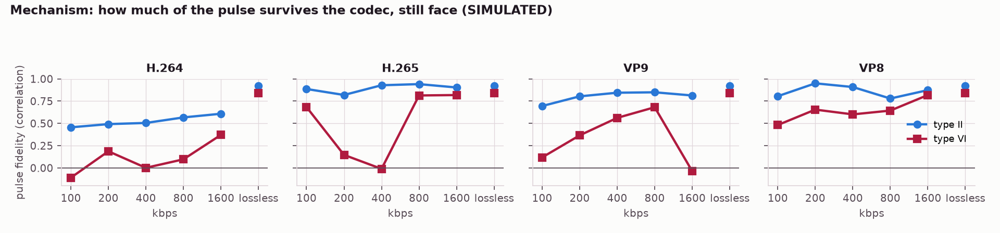
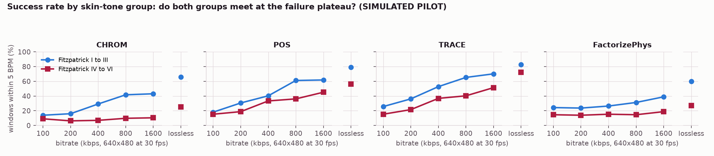
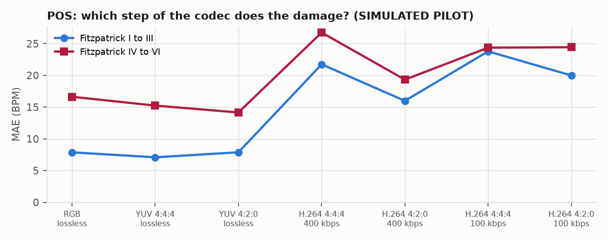
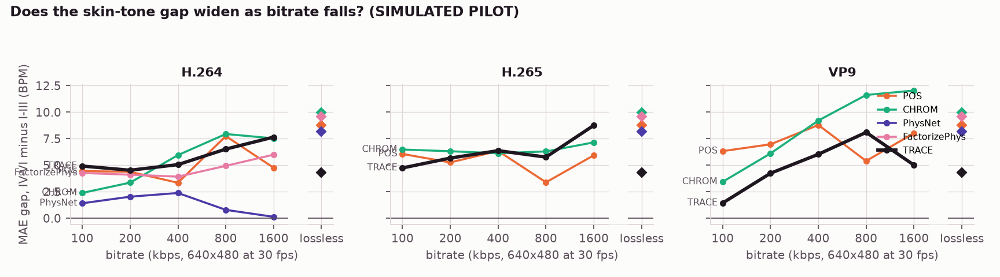
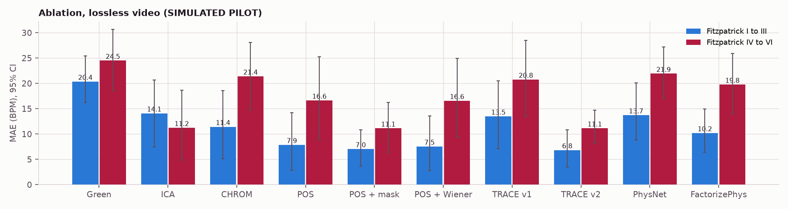
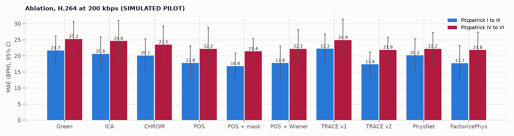
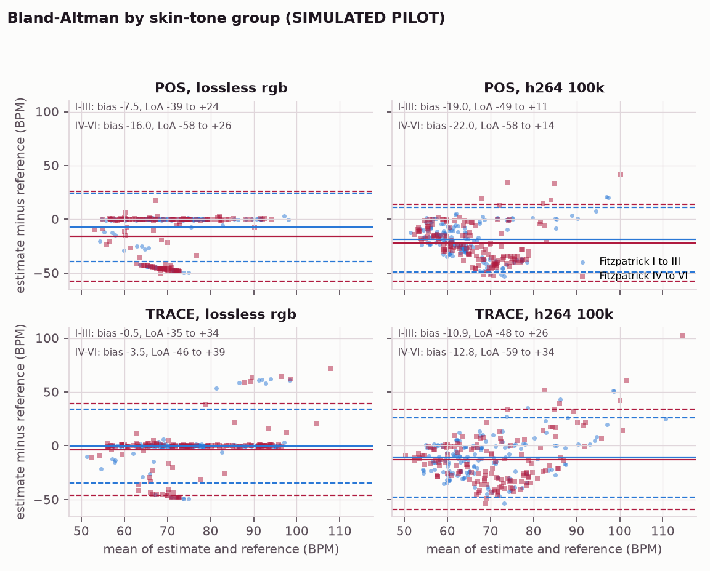

Abstract. We build a remote photoplethysmography (rPPG) system in which every physiological number comes out of a convolution or a Fourier transform, with no trained model in the estimation path. The pipeline detrends by convolution with a moving average, band-limits with a hand-built windowed-sinc filter, locates the heart rate as the peak of a windowed FFT refined by parabolic interpolation, guards against harmonic lock-on using Fourier-series reasoning, and computes heart-rate variability with a second Fourier transform of the beat intervals. On top of green, CHROM and POS we build TRACE, a signal-quality-adaptive fusion with a pulse-blind artifact reference. We then ask a research question the literature has not answered: does video compression widen the known skin-tone accuracy gap? A simulated pilot of {{N_SUBJECTS}} volunteers across {{CODECS}} gives the following answer. {{VERDICT_POS}}
Every heartbeat pushes blood into the capillaries of the face. Haemoglobin absorbs green light strongly, so the skin darkens very slightly with each beat: a change of well under one percent, invisible to the eye but within reach of an ordinary webcam [1]. Measuring it contactlessly matters wherever contact sensors fail: telehealth consultations, neonatal care, and driver monitoring. The difficulty is that the pulse is buried under lighting drift, motion and sensor noise that are all larger than it.
This project uses exactly the three tools of the course. Convolution removes drift and restricts the signal to plausible heart rates. The Fourier transform finds the rhythm, and a second Fourier transform of the beat intervals yields heart-rate variability. Fourier series explains why the spectrum has harmonics and why naive peak-picking can report twice the true rate.
Verkruysse et al. showed ambient light suffices [1]; Poh et al. used independent component analysis [2]; CHROM combines chrominance signals that cancel specular reflection under a standard skin colour [3]; POS projects onto the plane orthogonal to skin tone and weights its two axes adaptively [4]. Accuracy is known to fall on darker skin [5, 6] and under compression [7, 8]. The two are named as separately studied factors, and a search of 2,023 rPPG papers found none measuring their interaction. Deep models dominate recent work; we include two pretrained ones (PhysNet, FactorizePhys, via rPPG-Toolbox [9]) as baselines only.
| Stage | Course topic | What it does |
|---|---|---|
| Face tracking | Fourier transform | Phase correlation: a translation multiplies the spectrum by a linear phase, so the inverse FFT of the normalised cross-power spectrum peaks at the shift. |
| Detrending | Convolution | Moving-average kernel (61 samples at 30 fps, first null 0.49 Hz); subtracting a low-pass leaves a high-pass. |
| Temporal normalisation | Convolution | Each channel divided by its running mean, turning skin colour into relative change. |
| Bandpass 0.7 to 4 Hz | Convolution | Hand-built windowed-sinc FIR (301 taps), zero phase; the convolution theorem is verified numerically. |
| Heart rate | Fourier transform | Hann-windowed FFT, zero-padded, parabolic interpolation between bins. |
| Harmonic check | Fourier series | A sharp pulse shape implies harmonics; before accepting a peak at f, test f/2. |
| Quality and fusion | Fourier transform (Parseval) | Fraction of in-band power at the peak and harmonic; artifact spectrum as a mask. |
| HRV, LF/HF | Fourier transform, again | Welch PSD of the RR series resampled to 4 Hz; LF 0.04 to 0.15 Hz, HF 0.15 to 0.40 Hz. |
| CHROM, POS | Linear algebra | Fixed projections from a skin reflectance model, not learned. |
Before any video, the mathematics was checked on synthetic pulses (12 of 12 checks pass). A 72 BPM pulse under lighting drift four times its size and noise of equal power was recovered as 72.07 BPM. Direct convolution and the FFT route agree to 4.3e-16. Without zero padding the FFT computes circular convolution and corrupts the first len(h)-1 samples at 82 percent of scale. Parabolic interpolation cut the error on off-grid rates from 0.420 to 0.022 BPM. A pulse with a suppressed fundamental made naive peak-picking report 144 BPM; the sub-harmonic check recovered 71.99 with no false halvings from 86 to 140 BPM. The pulse was still recovered at -6 dB SNR.
Haar detection initialises the face box from the median of five detections; phase correlation then tracks it with a measured error of at most 0.13 px against the simulator's known motion. Re-running the detector every few frames made the box wobble by 1 to 2 px, which alone raised the green-channel error on dark simulated skin from 0.04 to 25 BPM, so the detector only corrects gross drift. The forehead and both cheeks are averaged with a per-frame adaptive chroma mask, so no fixed colour threshold favours one skin tone.
Green, ICA, CHROM and POS share one interface. After temporal normalisation a pure brightness change is the vector (1, 1, 1), which both CHROM and POS map to zero: measured output 2e-16 and 3e-15 against 1.8e-2 for green. TRACE v1 weighted methods by spectral quality alone and lost to POS on held-out data, because a periodic motion artifact is also a concentrated peak (for green the quality score was inversely related to correctness). TRACE v2 adds a pulse-blind artifact reference whose spectrum masks each method's spectrum (k = {{MASK_K}}) and penalises peaks shared with the artifact; weights are q^gamma with gamma = {{GAMMA}}, and below quality {{CONF}} the reading is flagged low confidence. Parameters were tuned on one simulated cohort and frozen before testing on others.
Beats are found on the POS pulse after a narrow band around the heart rate, then re-timed on the wideband waveform, because the narrow-band peak sits at the fundamental's phase rather than the systolic peak (that alone cost 41 ms RMS; re-timing brought it to 5.8 ms, under a fifth of a frame). Intervals are cleaned with the 20 percent rule and summarised as SDNN, RMSSD and pNN50. The RR series is resampled to a uniform 4 Hz grid before its Welch PSD, because the DFT requires uniform sampling. Checks: the integrated PSD equals the variance (Parseval), a two-tone RR series returns (A_lf/A_hf)^2 and matches scipy.signal.welch, and captures under two minutes are refused for LF/HF because the LF band's period is 25 s. Choosing the waveform by spectral quality picked the motion-fooled green channel on half the subjects, so HRV uses POS. On clean simulated video the SDNN error was {{HRV_CLEAN_SDNN}} ms and the RMSSD error {{HRV_CLEAN_RMSSD}} ms; with natural motion and screen light they rose to {{HRV_SDNN_MAE}} and {{HRV_RMSSD_MAE}} ms, because a single missed or extra beat moves RMSSD by tens of milliseconds. Heart rate is robust; beat-to-beat variability from video is not, in this simulation.
Simulator. A public-domain portrait is rendered with a two-layer reflectance model: melanin attenuates light more at short wavelengths, surface reflection is channel neutral, and the pulse modulates the dermal term along a standard blood-volume direction. Motion, lighting drift, chromatic light from a watched screen, sensor noise and a heartbeat with LF and HF rhythms complete it. The screen-light level was calibrated so uncompressed light-skin accuracy sits near published UBFC-rPPG figures.
Harness and grid. {{N_SUBJECTS}} simulated volunteers ({{N_PER_GROUP}} per skin-tone group), 60 s each, encoded with {{CODECS}} at {{BITRATES}} kbps with real-time settings, plus lossless RGB, YUV 4:4:4 and YUV 4:2:0 controls and a 4:4:4 H.264 ablation. The lossless control decodes bit-identically. Error is evaluated in 20 s windows with a 5 s hop against the reference PPG.
Statistics. Per-subject, per-condition MAE is modelled as err ~ log2(kbps) x dark + (1 | subject). The interaction coefficient is the claim; it is reported with Wald and subject-bootstrap intervals and a log-error robustness check.
Headline. {{VERDICT_POS}}
CHROM. {{VERDICT_CHROM}}
| MAE (BPM) | Lossless I-III | Lossless IV-VI | 100 kbps I-III | 100 kbps IV-VI |
|---|---|---|---|---|
| POS | {{POS_LL_LIGHT}} | {{POS_LL_DARK}} | {{POS_100_LIGHT}} | {{POS_100_DARK}} |
| TRACE | {{TRACE_LL_LIGHT}} | {{TRACE_LL_DARK}} | {{TRACE_100_LIGHT}} | {{TRACE_100_DARK}} |
| PhysNet | {{PHYSNET_LL_LIGHT}} | {{PHYSNET_LL_DARK}} | {{PHYSNET_100_LIGHT}} | {{PHYSNET_100_DARK}} |
| FactorizePhys | {{FACTORIZEPHYS_LL_LIGHT}} | {{FACTORIZEPHYS_LL_DARK}} | {{FACTORIZEPHYS_100_LIGHT}} | {{FACTORIZEPHYS_100_DARK}} |




Mitigation. {{MITIGATION}} {{VERDICT_TRACE}} On a held-out uncompressed cohort, POS scored {{FUSION_POS}} BPM, POS with the artifact mask alone {{FUSION_MASK}}, TRACE v1 {{FUSION_V1}} and TRACE v2 {{FUSION_V2}}. Readings TRACE marked confident ({{FUSION_COVERAGE}} percent of windows) had {{FUSION_CONF_MAE}} BPM error against {{FUSION_FLAG_MAE}} for flagged ones.



Learned baselines. PhysNet: {{VERDICT_PHYSNET}} FactorizePhys: {{VERDICT_FACTORIZEPHYS}}
| Condition | Behaviour | Why |
|---|---|---|
| Low light | Fails | Needs reflected visible light. |
| Darker skin | Less accurate | Melanin lowers pulse amplitude in pixel levels; the subject of this study. |
| Heavy motion or talking | Green fails first; all degrade | Motion changes brightness and specular reflection in the heart-rate band. |
| Screen light | Sets an accuracy floor | Chromatic changes are not cancelled by CHROM or POS. |
| Low bitrate | Pulse attenuated | Chroma subsampling and quantisation of sub-level changes. |
| TRACE on light skin, low motion | Can lock on a harmonic | The artifact reference leaks pulse and the mask removes the fundamental. |
The central limitation is that skin-tone physics is modelled: a simulated fan (or its absence) is evidence about the mechanism, not about people. The next step is recording volunteers across Fitzpatrick III to VI in Dhaka; the power analysis indicates {{POWER_N}} per group for 80 percent power at an interaction of {{POWER_EFFECT}} BPM per doubling of bitrate.
The system never uploads video. Any recording of people requires informed consent, coded storage and deletion after the study (protocol in deliverables/data_collection_protocol.md). Heart-rate variability is a wellness indicator and never a diagnosis. Skin-tone and lighting limitations are reported rather than omitted.
Estimate the pulse direction per window from the data so the artifact reference cannot leak pulse; validate on real lossless recordings; extend to camera-only ballistocardiography, whose failure modes are nearly orthogonal to rPPG's.